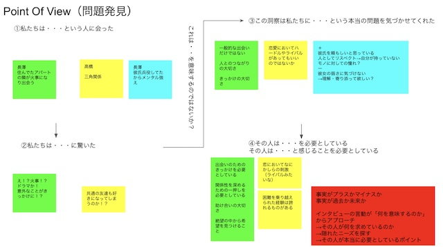

【8月ワーク】※編集中
合宿においての到達目標
現在、行き詰まっている状態
↓
因子分析とデザインシンキングの復習（合宿）
今後の研究を深めていく上での根幹の部分である「結婚そのもの」について
結婚動機をはじめとした結婚に関する調査を行っていく
↓
合宿での調査とは別に…（ブライダルについて多角的に捉えたい）
→引き出物などブライダルに関わるアイテムについての考え方
→結婚式においての招待客の割合（親族・友人・上司等・・・）についても調べる
◆合宿（因子分析）
男性、女性
60代以上(典型的なのか、意外性があるか)
20代(同世代がどんなか)
40代(親世代との比較)
因子1 愛情欲求因子
因子2 要求因子
因子3 金銭管理因子
因子4 育児・家事因子
因子5 結婚願望因子
因子6 相手因子
因子7 価値観因子
因子8 共有…？
因子1 愛情欲求因子
因子2 促され因子(社会的)
因子3 育児・家事因子(家庭的)
因子4 家族の最低ラインの安全安定因子
因子5 タイミング因子
因子6 経済性安定因子
因子7 相手因子
因子8 相互依存因子
因子9 人間関係因子
因子1 愛情欲求因子
因子2 促され因子(社会的)
因子3 最低限安定因子
因子4 タイミング因子
因子5 経済性安定因子
因子6 相手因子
因子7 安定志向因子
女性
因子1 承認愛情因子
因子2 家庭的因子
因子3 生活安定因子
因子4 焦燥因子
男性
因子1 感情的因子
因子2 タイミング・期限的因子
因子3 外的因子
因子4 条件的因子
20代
因子1 一人前因子
因子2 流され因子
因子3 ギブアンドテイク因子
因子4 安泰因子
因子5 シンクロ因子
因子6 一般的因子
40.50代
因子1 共生因子
因子2 人間関係因子
因子3 焦燥因子
因子4 自己中心的因子
◆合宿（デザインシンキング）
